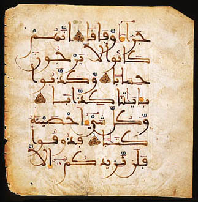

The Koran and Eastern Modes of Thought
Eastern religious documents often strike westerners as tedious and repetitious.
"I wonder how, with such a repetitive farrago of platitudes, expressing so self-evident a theology and an ethic so puerile, Islam can have spread as it has." Anthony Burgess, The Long Day Wanes (on the Koran)
